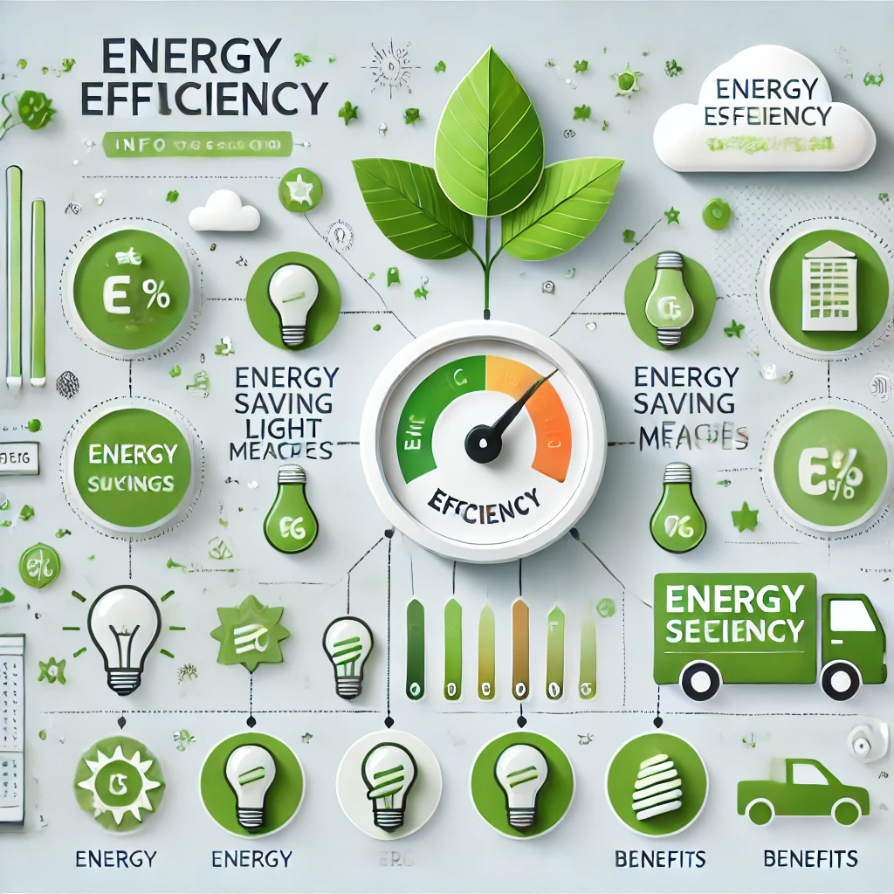

Glosario
1. Condensador de Agua
• Proceso mediante el cual el vapor de agua en el aire se transforma en líquido al enfriarse.
Ejemplo:Captadores de agua atmosférica.2. Humedad Relativa:
• Proporción de vapor de agua presente en el aire en relación con la cantidad máxima que puede contener a una temperatura dada, expresada en porcentaje.
Ejemplo:Una humedad relativa del 50% significa que el aire contiene la mitad de la cantidad máxima de agua que puede tener.3. Prototipo:
• Primer modelo o versión experimental de un producto que sirve para probar y mejorar su diseño.
Ejemplo:Un prototipo de sistema de filtración de agua en zonas rurales.4. Eficiencia Energética:
• Uso de menos energía para proporcionar la misma cantidad de servicio o producción, minimizando el desperdicio.
Ejemplo:Bombillas LED de bajo consumo. 5. Purificación de Agua:
• Proceso de eliminación de contaminantes del agua, incluidos sedimentos, bacterias, virus y productos químicos, para que sea seguro para el consumo.
Ejemplo:Como la filtración, cloración o purificación UV.6. Potabilidad:
• Calidad del agua que la hace apta para el consumo humano sin riesgos para la salud.
Ejemplo:Agua embotellada tratada según estándares de seguridad.7. Infraestructura Hídrica:
• Sistemas físicos y estructuras, como tuberías y embalses, diseñados para gestionar la distribución y almacenamiento de agua
Ejemplo:Como represas, acueductos y plantas de tratamiento de agua.8. Evaporación:
• Proceso por el cual el agua cambia de estado líquido a vapor debido a la aplicación de calor.
Ejemplo:Agua evaporándose de lagos y océanos.9. Ciclo Hidrológico:
• Movimiento continuo de agua en la Tierra, incluyendo evaporación, condensación, precipitación y escorrentía.
Ejemplo:Evaporación, condensación, precipitación e infiltración.10. Corporaciones Autónomas Regionales (CAR):
• Entidades encargadas de la gestión ambiental en Colombia, incluidas la emisión de licencias ambientales y la regulación del uso de recursos naturales.
11. Modelo Cientifico:
• Representación abstracta, conceptual o matemática de un fenómeno real utilizado para analizar y predecir su comportamiento.
Ejemplo:Los modelos de predicción climática.
12. Erosión Costera:
• Proceso de desgaste y retroceso de la línea de costa debido a la acción del mar, el viento y la actividad humana.
Ejemplo:Costas afectadas por huracanes y tormentas.13. Planes Lanes de Ordenamiento Territorial (POT):
• Instrumentos legales en Colombia que organizan el uso del suelo y el desarrollo territorial de una región o municipio.
14. Calidad del Agua:
•Medida de la condición del agua en función de las características fisicoquímicas y microbiológicas que determinan su idoneidad para el consumo humano o uso en la agricultura.
Ejemplo:Análisis de pH, turbidez y contaminantes.
15. Decreto 1575 de 2007:
• Legislación colombiana que regula la calidad del agua potable y establece los parámetros de control que deben seguir los proveedores de este servicio.
16. Resolución 2115 de 2007:
• Normativa colombiana que fija los criterios de calidad del agua potable y los métodos de tratamiento que deben aplicar para asegurar su potabilidad.
17. Ley 99 de 1993:
• Ley colombiana que establece las bases para la protección ambiental y el uso sostenible de los recursos naturales, incluyendo el agua.
18. ISO 14001:
• Norma internacional que especifica los requisitos para un sistema de gestión ambiental efectivo, con el fin de reducir el impacto negativo sobre el medio ambiente.
19. Desinfección con cloro:
• Proceso químico para eliminar microorganismos patógenos del agua mediante la adición de cloro.
Ejemplo:Tratamiento de agua potable con hipoclorito de sodio.20. Rayos UV (ULTRAVIOLETA):
• Tipo de radiación utilizada para desinfectar el agua al destruir el ADN de los microorganismos patógenos.
21. NTC 1000:
• Norma Técnica Colombiana que establece requisitos de seguridad para productos eléctricos y mecánicos.
22. Certificación CE:
• Marca de conformidad europea que indica que un producto cumple con los requisitos de seguridad y salud establecidos por la Unión Europea.
23. Filtración:
• Proceso físico de remoción de partículas suspendidas en el agua mediante el uso de filtros.
Ejemplo:Filtros de carbón activado en sistemas de purificación de agua.24. Turbidez:
• Medida de la claridad del agua que indica la cantidad de partículas suspendidas en ella.
Ejemplo:Agua de río con alta turbidez tras una tormenta debido al sedimento en suspensión.25. Materiales Reciclables:
• Materiales que pueden ser reprocesados y reutilizados para fabricar nuevos productos, reduciendo el impacto ambiental.
Ejemplo:Plásticos PET, papel y cartón, que son procesados y reutilizados en nuevos productos.26. Condensadores de Agua Atmosférica(AWG):
• Dispositivos que extraen agua del aire mediante la condensación, utilizados en zonas con alta humedad y escasez de agua potable.
Ejemplo:Máquinas de AWG usadas en áreas áridas para abastecer de agua potable a comunidades sin acceso a agua.
27. Cosecha de Nieblas:
• Tecnología que captura gotas de agua suspendidas en la niebla mediante mallas o redes para recolectar el agua.
Ejemplo:Proyectos en zonas montañosas donde se instala mallas para capturar niebla y producir agua para consumo.28. Desalinización solar:
• Proceso de eliminar la sal del agua de mar mediante la evaporación por calor solar para producir agua potable.
Ejemplo:Desalinizadores solares en comunidades costeras donde no hay agua dulce.29. Enfriadores radiativos:
• Sistemas que utilizan materiales reflectantes para enfriar superficies por debajo de la temperatura ambiente, favoreciendo la condensación de agua durante la noche.
Ejemplo:Paneles de enfriamiento radiativo que enfrían el aire al reflejar el calor hacia el espacio.
30. Evaluacion del Impacto Ambiental (EIA):
• Proceso mediante el cual se analiza y mide el impacto ambiental potencial de un proyecto para mitigar los efectos negativos en el entorno.
Ejemplo:EIA para una planta hidroeléctrica que evalúa el impacto en el ecosistema y en comunidades cercanas.31. ISO 9001:
• Norma internacional que especifica los requisitos para un sistema de gestión de calidad que asegura la mejora continua de los procesos y la satisfacción del cliente.
Ejemplo:Fábricas de producción certificadas en ISO 9001 para mejorar sus procesos y productos.32. NFS/ANSI 61:
• Norma estadounidense que establece criterios de seguridad para los materiales que están en contacto con agua potable, garantizando que no liberan contaminantes nocivos.
Ejemplo:Tuberías de agua potable certificadas con NSF/ANSI 61 para evitar contaminantes en el agua.33. Huella de carbono:
• Medida de la cantidad total de gases de efecto invernadero emitidos directa o indirectamente por actividades humanas.
Ejemplo:Cálculo de la huella de carbono en la fabricación de un litro de agua embotellada.34. Carros cisterna:
• Vehículos especializados en el transporte de grandes cantidades de agua para distribuirla en áreas donde no hay acceso a redes de suministro.
Ejemplo:Camiones cisterna que abastecen de agua a comunidades rurales en épocas de sequía.